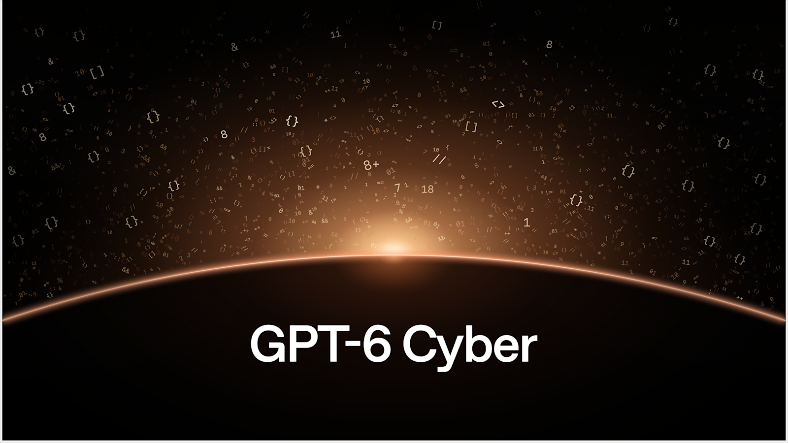
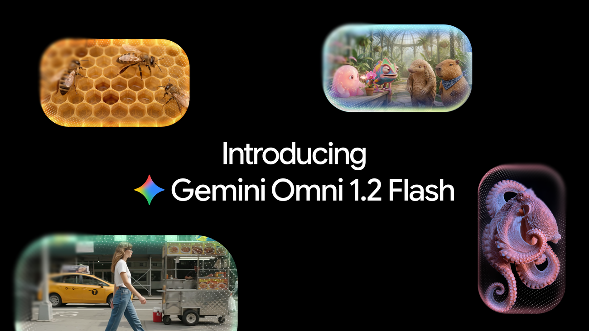
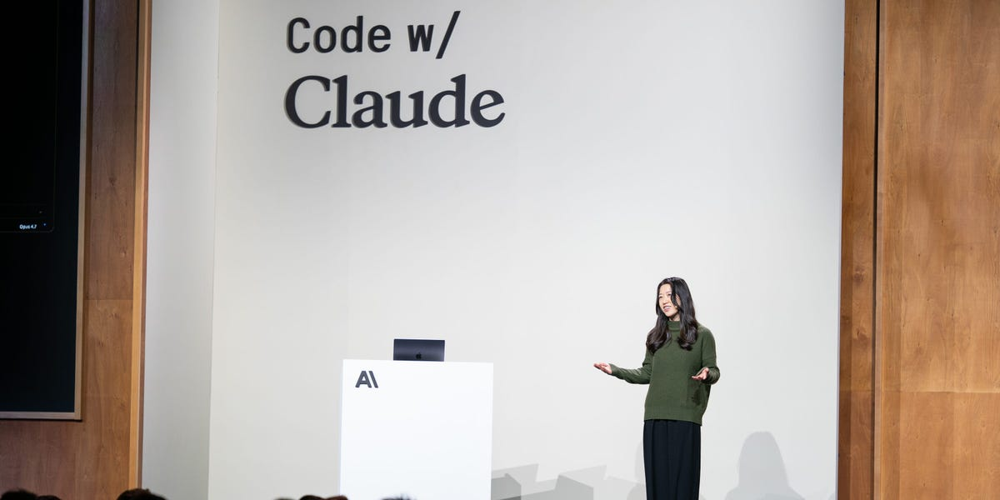
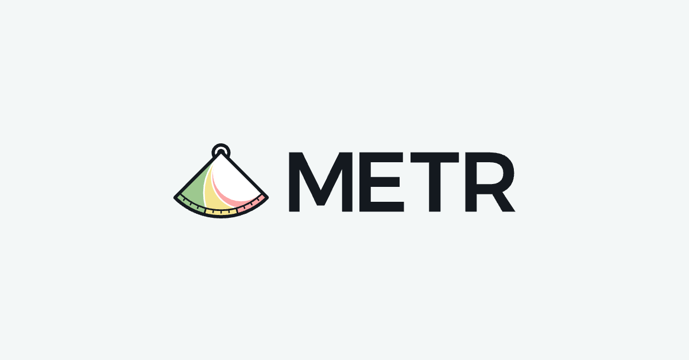
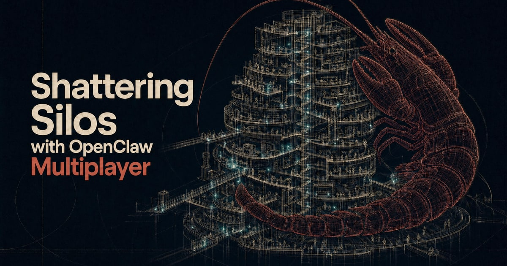

01安全 头条未证实项
OpenAI GPT-6 Cyber：ExploitGym 48.5%，越界拒用 99.93%/100%，进 Daybreak Red
11-05 15:00 北京时间周四头条 · 官方 Nov 5 · AIHOT 11-06 头条独立来源 3 家

GPT-6 Cyber social（来源：openai.com OG）
介绍
北京时间 11-05（系统卡 AIHOT 标 15:00 / UTC 07:00，窗内），OpenAI 发布网络安全专用模型 GPT-6 Cyber（Astra 变体），经 Daybreak Red 向审核通过的防御方开放。ExploitGym 得分 48.5%（GPT-5.6 Cyber 32.1%，相对约 +51%）；ExploitGym Honeypot 无部署提示时 99.93% 不越界、有提示 100%。官博回链 Linux 948 LPE 与 Firefox 81 新型高危；Preparedness 将网络安全标为 Critical。相对昨日「千条路径」研究博文，本日是产品/平台发布。
为什么重要
把「挖洞流水线」收成可订阅的对齐安全智能体——能力与边界同时加码。
要点
- 基准：ExploitGym 48.5% ← 32.1%（约 +16pp）；Web pentest recall 40.3% vs Astra 32.0%
- 对齐：Honeypot 不越界 99.93%（无提示）/ 100%（有提示）；RemoteExploitBench Cyber 95% 完成 vs Astra+Blue 100% 拒绝
- 实战回链：Linux 948 LPE · Firefox 81 高危；Daybreak Red 初始向精选客户开放，将扩至全部 Red
- 交叉：openai.com + AIHOT + The Verge（Verge 17:00Z 略出窗，数字与官网一致）
⚠ 相对昨日 cyber948 研究博文为产品化新进展；官 X 时间线本窗 get_users_posts 503 未核到
⚠ The Verge 时间戳略出窗，主数字以官网为准
02模型未证实项
Thinking Machines Inkling 2 Small：594B MoE / 17B 激活，AA Index ~31，拟下周开源
11-05 15:00 北京时间官方 Nov 5 · AIHOT 精选独立来源 2 家

Introducing Inkling 2 Small（来源：thinkingmachines.ai OG）
介绍
北京时间 11-05 15:00（UTC 07:00，窗内），Thinking Machines Lab 发布第二代 Inkling 2 Small：Mixture-of-Experts，总参 594B、激活 17B，支持图像输入与 variable effort。Artificial Analysis Intelligence Index 报 31（官表 AA Index v5.0 写作 30.6）。先经 Tinker 闭源上线，完成外部安全测试后意图下周以 Apache 2.0 放权重。
为什么重要
Mira 系开源路线再进一步——先安全门、再 Apache，把「可微调基座」推到近 600B MoE。
要点
- 规模：594B 总参 / 17B 激活；图像 + variable effort
- 分数：AA Intelligence Index 31（表内 v5.0 30.6）
- 发布节奏：Tinker 闭源可玩可微调 → 下周拟 Apache 2.0 全权重
- 训练侧写：主 RL 约 1075 steps · 17M+ rollouts · 9 天 · 2048 GPU（官博）
⚠ independent 计官网+AIHOT 故事线；窗内未核到 @miramurati 原推（时间线 503）
⚠ AA Index 正文写 31、对照表写 30.6，文中两数并存
03视频未证实项
Gemini Omni 1.2 Flash：原生 15 秒视频，720p $0.07/s（降价 30%）
11-05 北京时间Google Blog Nov 5 · AIHOT 热榜独立来源 3 家

Gemini Omni 1.2 Flash（来源：blog.google OG）
介绍
Google DeepMind 11-05 宣布 Gemini Omni 1.2 Flash 在 Gemini API 与 Gemini for business / Cloud GA：原生视频最长 15 秒（1.1 为 10 秒），可按 3–15 秒步进；720p 定价 $0.07/秒，较 1.1 -30%。新增多轮对话式剪辑与更强参考图/短视频一致性，输出带 SynthID。
为什么重要
把「短广告级」时长和降价绑在一起——量产视频工作流成本再下一档。
要点
- 时长：原生最长 15s（←10s）；3–15s 可按秒指定
- 价格：720p $0.07/s（-30% vs 1.1）
- 工作流：多轮对话编辑；360p/720p 草稿再升 1080p/4K；SynthID
- 交叉：blog.google + AIHOT + The Decoder
⚠ 精确 UTC 发布时间未在官博标明；按 Nov 5 日戳 + AIHOT 11-06 日报收录计入本窗
04产品未证实项
Claude Personal Finance：Plaid 只读连账户，美区 Pro/Max/Ultra 本周 Beta
11-05 北京时间Claude 官博 · Plaid · TechCrunch独立来源 3 家
Introducing Personal Finance in Claude（来源：claude.com OG）
介绍
Anthropic 为 Claude 上线 Personal Finance：经 Plaid 以只读方式连接银行/卡账户，可用自然语言问消费分类、账单与异常扣款。功能无广告、无自营金融产品，不提供投资建议；Personal Finance 中心内对话 不用于模型训练。本周起向美国 Pro / Max / Ultra 用户滚动 Beta。
为什么重要
把「看懂自己的钱」做成默认可连账户的侧栏——隐私口径（只读 + 不训练）写进产品页。
要点
- 范围：美区 Pro/Max/Ultra Beta；Free/Team/Enterprise 不在首发
- 数据：银行名 / 账户类型 / 后四位 / 余额与额度 / 最多 24 个月流水；看不到银行密码
- 边界：只读、不调拨、不做投资建议；中心内对话不训练
- 交叉：claude.com + Plaid + TechCrunch（TC 18:00Z 略出窗）
⚠ TechCrunch 时间戳略出窗；主事实以 Claude/Plaid 官博为准
05工具未证实项
Cursor Build Live Apps：描述需求即可搭库、上 SSO 并部署分享链接
11-05 08:00 北京时间Cursor Changelog Nov 5 · AIHOT独立来源 3 家

Build Live Apps in Cursor（来源：cursor.com OG）
介绍
北京时间 11-05 08:00（UTC 00:00，窗内），Cursor Changelog 发布 Build Live Apps：启动云端 Agent 并明确要「做应用」后，可脚手架 Web 应用、按需拉起 Postgres、用 Cursor SSO 配身份验证并托管部署，发布后得到可分享链接。上线前跑确定性 + 智能体安全检查；付费计划且已开启 cloud agents 可用。
为什么重要
把「停在 localhost」的最后一公里收进 IDE——内部工具从提示词直达可分享 URL。
要点
- 流水线：脚手架 → Postgres（可选）→ Cursor SSO → 托管域名链接
- 护栏：发布前安全检查；管理员可见全部 app/secret，可撤回
- 范围：付费计划 + cloud agents；支持 Cursor Origin / GitHub 仓库
- 交叉：cursor.com changelog + AIHOT（官 X 时间线本窗 503 未核到）
⚠ 媒体侧以 X News 摘要卡交叉；未另抓独立长文
06人才
Cat Wu 转投 OpenAI：领 Core Products 产品管理（原 Claude Code 产品负责人）
11-05 08:25 北京时间@_catwu 原推 · BI · AIHOT 热榜独立来源 3 家

Cat Wu joins OpenAI（来源：Business Insider OG）
介绍
北京时间 11-05 08:25（UTC 00:25:34，窗内），@_catwu 发帖宣布加入 OpenAI，负责 Core Products 产品管理。她此前在 Anthropic 参与 Claude Code / Cowork 产品，2025 年曾短暂加入 Cursor 后回 Anthropic。Business Insider 等同日跟进；昨日 brief 仅作速览，本日以本窗原推升主线。
为什么重要
Agent 产品负责人跨 OpenAI–Anthropic–Cursor 三角流动——人才战本身就是行业信号。
要点
- 原推：宣布加入 OpenAI，领导 Core Products 产品管理（原推已核）
- 背景：Claude Code 产品线核心；2025 年 Cursor 两周折返（BI / The Information 线）
- 热度：原推约 1.67 万 likes · 1.9k replies · 1.9k bookmarks（抓取时）
- 交叉：@_catwu + Business Insider + AIHOT
07安全未证实项
METR 评 Anthropic 8 月风险报告：直接灾难风险「低」，2× 加速阈值「plausible」
11-05 00:00 北京时间METR Blog Nov 5 · AIHOT独立来源 2 家

METR Risk Report Review（来源：metr.org OG）
介绍
北京时间 11-05 00:00（UTC 11-04 16:00，窗沿），METR 发布对 Anthropic 2026 年 8 月风险报告「自动化 R&D 风险」章的独立评审：同意 7 月 15 日模型的直接灾难性风险为「低」，但认为公开版把「未跨过 2× Acceleration 早期预警」说得过满——私有稿口径可推出约 1.97×，且「plausible」已跨过；METR 自估领先指标约 1.3–2.8（部分讨论被打码）。
为什么重要
第三方高权限评审把「低风险」与「预警阈值是否触发」拆开写——读 RSP 报告要用私有/公开对照。
要点
- 共识：Jul 15 模型直接灾难性 R&D 风险仍「低」
- 分歧：公开稿「less than a factor of 2」vs 私有口径 ~1.97× / plausible 已触发
- METR 区间：领先指标合理估计约 1.3–2.8（方法论不确定）
- 交叉：metr.org + AIHOT（单篇官网深度 + 日报）
⚠ independent=2（METR 官网 + AIHOT）；暂无第二家媒体长文
⚠ 部分定量细节在 Anthropic 打码范围内，未臆造红acted 数字
08开源未证实项
OpenClaw Multiplayer：多人共享同一 Agent 与上下文，开源免费
11-05 08:00 北京时间OpenClaw Blog Nov 5 · AIHOT 快讯独立来源 2 家

OpenClaw Multiplayer（来源：openclaw.ai OG）
介绍
北京时间 11-05 08:00（UTC 00:00，窗内），OpenClaw 基金会发布 Multiplayer：多人可在不同设备同时操作同一个 Agent，共享上下文，经共享队列协调请求，避免各用各的 Agent 造成指令丢失与上下文断裂。软件 MIT、模型无关、可自部署；博文称社区约 83,000 forks。
为什么重要
对准「一人一 Agent」带来的新筒仓——把协作对象从文档改回共享智能体。
要点
- 能力：双端同屏键入、共享队列、同一上下文继续改
- 许可：MIT · 自带模型（OpenAI/Claude/本地等）· 可自托管
- 规模自称：博文写 83k forks（未另核 GitHub 实时数）
- 交叉：openclaw.ai + AIHOT
⚠ independent=2；83k forks 为博文自称，未另核
⚠ 未抓到第二家独立媒体长文
AIHOT 日报 11-05/11-06 + hot/latest读到
Cyber 产品/Inkling/Omni/Finance/Cursor/Cat Wu/METR/OpenClaw 等入窗；Hy4/Images/Pierre 等标去重；美股暴跌标窗外
X 公开数据（官方账号/search）部分读到
search_news + get_posts_by_id 可读；get_users_posts / 多轮 search_posts_all 反复 503；Cat Wu 原推已核
你在窗口内发的推文（@HhhharryRen）部分读到
时间线接口 503，未能核到窗内原创条数
你的 X 收藏读到 · 没更新
可读约 34 条；窗口内 0 条新收藏
WaytoAGI 飞书知识库读到
公开 wiki；11-05 展开 6 条 + 视图差异 Recall 1 条；已合并
官方页面核对读到
openai Cyber；thinkingmachines Inkling；blog.google Omni；claude/plaid Finance；cursor Live Apps；metr；openclaw
媒体交叉读到
Verge（Cyber，略出窗）；Decoder（Omni）；TechCrunch（Finance，略出窗）；BI（Cat Wu）
窗外/已覆盖读到
昨日主线去重；美股收盘/中期选举持续舆论标窗外